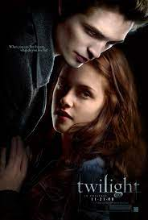
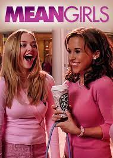

|  | High-school student Bella Swan doesn't expect life to change much when she moves from sunny Arizona to rainy Washington state.She then meets Edward Cullen, a handsome but mysterious teen whose eyes seem to peer directly into her soul, who seems to have a deep hatred for her. Edward is a vampire whose family does not drink blood, and Bella, far from being frightened, enters into a dangerous attraction with her immortal soulmate.. | Cast: | Kristen Stewart, Robert Pattinson, Taylor Lautner, Ashley Greene, Nikki Reed, Kellan Lutz,Peter Facinelli,Carlisle Cullen
,Billy Burke,Charlie Swan,Elizabeth Reaser
Directors: CHris Weitz, David, Slade, Bill Condon, Catherine Hardwicke |
Reviews; Sahra Shirley: I Abosolutely, love the hole Series it is very, awesome, and i have watched it a lot of times. Stephinie Meyer did a great job writting the books. 17 The First Twilight Movie Made More Money During Its Opening Than Any Other Film Directed By A Woman. Dakota Faninning is one of the Characters, Patrick Stewart too, and Kristen Stewart. And do not forget Taylor Launter!! |
|  | Teenager Cady Heron was homeschooled in Africa by her parents. When she and her family move to the suburbs of Illinois, Cady finally gets to experience public school. There she learns the classes that divide her fellow students into tightly knit cliques. She finds herself in an an elite group of popular students named "the Plastics," in the group she is persuaded by her friend, to pretend being friends with Regina and hang out with her and her group only for them to gossip about her behind her back. |